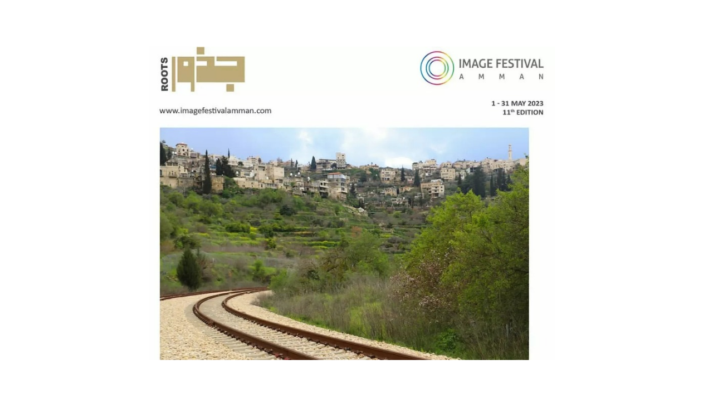

"Hasan Mustafa, the Torchbearer"
Hasan Mustafa was a broadcaster, educator, and visionary from Battir who dedicated his life to protecting his homeland. During the 1948 catastrophe, while fear led many to flee, he refused to leave. Staying behind with just 13 men, Hasan devised a clever plan: keeping lanterns lit and laundry hanging to make the village appear fully inhabited and armed. His brave ruse scared off approaching Zionist forces, saving Battir from displacement and allowing its residents to return safely. To honor his lasting legacy, his daughter Nadia established the Hasan Mustafa Cultural Center in Battir, which played a pivotal role in having the village recognized by UNESCO. Today, Hasan Mustafa remains a timeless symbol of Palestinian rootedness and identity..